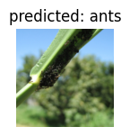
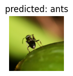
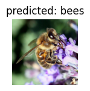
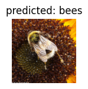
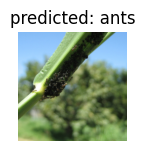
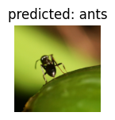
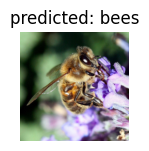
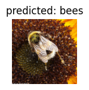

6. Convolutional Neural Networks#
At the end of this exercise you will know how to:
construct a CNN image classification pipeline from scratch, based on the Training a Classifier PyTorch tutorial
use a pretrained CNN model for image classification, based on the Transfer Learning for Computer Vision Tutorial by PyTorch
We will keep this notebook as tight as possible as many of the questions you might have are already answered in these excellent PyTorch tutorials. Our focus will be on the nitty-gritty details, which are not explained in depth in the tutorials.
One further helpful PyTorch resource is the official cheat sheet.
from __future__ import print_function, division
import torch
import torch.nn as nn
import torch.nn.functional as F
import torch.optim as optim
from torch.optim import lr_scheduler
import torch.backends.cudnn as cudnn
import numpy as np
import torchvision
from torchvision import datasets, models, transforms
import matplotlib.pyplot as plt
import time
import os
import copy
from torch.utils.tensorboard import SummaryWriter
cudnn.benchmark = True
plt.ion() # interactive mode
# Load the TensorBoard notebook extension for logging training runs
%load_ext tensorboard
6.1. Training a Classifier#
We will be working with the Cifar10 dataset, which is probably the second best known classification dataset just after Mnist and just before ImageNet. It consists of 60,000 RGB images of shape 3x32x32 from 10 different classes with 6000 images per class. The python dataset requires around 160 MB space.
# the transform is a preprocessing step over the data before feeding it to the model.
# The `ToTensor` transform converts the PIL image to a tensor with values in the range
# [0, 1]. The `Normalize` transform applies input normalization which you have seen in
# the "Tricks of Optimization" lecture.
transform = transforms.Compose(
[transforms.ToTensor(),
transforms.Normalize((0.5, 0.5, 0.5), (0.5, 0.5, 0.5))])
batch_size = 4
# if you don't use the `download=True` argument, the data will be downloaded in the
# root directory, if it is not already there.
trainset = torchvision.datasets.CIFAR10(root='./data', train=True,
download=True, transform=transform)
trainloader = torch.utils.data.DataLoader(trainset, batch_size=batch_size,
shuffle=True, num_workers=2)
testset = torchvision.datasets.CIFAR10(root='./data', train=False,
download=True, transform=transform)
testloader = torch.utils.data.DataLoader(testset, batch_size=batch_size,
shuffle=False, num_workers=2)
classes = ('plane', 'car', 'bird', 'cat',
'deer', 'dog', 'frog', 'horse', 'ship', 'truck')
# print("Number of training batches: ", len(trainloader)) # 1250
Downloading https://www.cs.toronto.edu/~kriz/cifar-10-python.tar.gz to ./data/cifar-10-python.tar.gz
100%|██████████| 170498071/170498071 [00:03<00:00, 42983432.61it/s]
Extracting ./data/cifar-10-python.tar.gz to ./data
Files already downloaded and verified
Now, we can look at one random batch.
def imshow(img):
img = img / 2 + 0.5 # unnormalize
npimg = img.numpy()
plt.imshow(np.transpose(npimg, (1, 2, 0)))
plt.show()
# get some random training images
# first make an iterator over the training data and then get the `next` batch
dataiter = iter(trainloader)
images, labels = next(dataiter)
# show images
imshow(torchvision.utils.make_grid(images))
# print labels
print(' '.join(f'{classes[labels[j]]:5s}' for j in range(batch_size)))
# print shapes
print(f'Shapes of images: {images.shape} and labels: {labels.shape}')
dog car horse plane
Shapes of images: torch.Size([4, 3, 32, 32]) and labels: torch.Size([4])
We are ready to define our first CNN
class Net(nn.Module):
def __init__(self):
super().__init__()
self.conv1 = nn.Conv2d(3, 6, (5,5)) # (in_channels, out_channels, kernel_size) -> 6x28x28
self.pool = nn.MaxPool2d(2) # -> 6x14x14
self.conv2 = nn.Conv2d(6, 16, 5) # -> 16x10x10
self.fc1 = nn.Linear(16 * 5 * 5, 120) # (in_features, out_features)
self.fc2 = nn.Linear(120, 84)
self.fc3 = nn.Linear(84, 10)
def forward(self, x):
x = self.pool(F.relu(self.conv1(x)))
# print(f"x.shape = {x.shape}")
x = self.pool(F.relu(self.conv2(x)))
# print(f"x.shape = {x.shape}")
x = torch.flatten(x, 1) # flatten all dimensions except batch
# print(f"x.shape = {x.shape}")
x = F.relu(self.fc1(x))
# print(f"x.shape = {x.shape}")
x = F.relu(self.fc2(x))
# print(f"x.shape = {x.shape}")
x = self.fc3(x)
return x
To have a trainig loop we are just missing the loss (“criterion”) and optimizer
net = Net()
criterion = nn.CrossEntropyLoss()
optimizer = optim.SGD(net.parameters(), lr=0.001, momentum=0.9)
# if we use the commented out code in the model definition, we get these shapes
outputs = net(images)
x.shape = torch.Size([4, 6, 14, 14])
x.shape = torch.Size([4, 16, 5, 5])
x.shape = torch.Size([4, 400])
x.shape = torch.Size([4, 120])
x.shape = torch.Size([4, 84])
Let’s train this model
writer = SummaryWriter('runs/cifar10_experiment_1')
for epoch in range(2): # loop over the dataset multiple times
running_loss = 0.0
for i, data in enumerate(trainloader, 0):
# get the inputs; data is a list of [inputs, labels]
inputs, labels = data
# zero the parameter gradients
optimizer.zero_grad()
# forward + backward + optimize
outputs = net(inputs)
loss = criterion(outputs, labels)
loss.backward()
optimizer.step()
# print statistics
running_loss += loss.item()
if i % 2000 == 1999: # print every 2000 mini-batches
writer.add_scalar('train/loss', running_loss / 2000, epoch * len(trainloader) + i )
print(f'[{epoch + 1}, {i + 1:5d}] loss: {running_loss / 2000:.3f}')
running_loss = 0.0
print('Finished Training')
writer.close()
[1, 2000] loss: 2.160
[1, 4000] loss: 1.799
[1, 6000] loss: 1.644
[1, 8000] loss: 1.558
[1, 10000] loss: 1.496
[1, 12000] loss: 1.448
[2, 2000] loss: 1.392
[2, 4000] loss: 1.368
[2, 6000] loss: 1.349
[2, 8000] loss: 1.290
[2, 10000] loss: 1.307
[2, 12000] loss: 1.264
Finished Training
%tensorboard --logdir 'runs/cifar10_experiment_1'
Get a prediction over one of the test batches
# get test sample
dataiter = iter(testloader)
images, labels = next(dataiter)
# evaluate model on test input
outputs = net(images)
# make predictions
_, predicted = torch.max(outputs, 1)
print('Predicted: ', ' '.join(f'{classes[predicted[j]]:5s}' for j in range(4)))
print('GroundTruth: ', ' '.join(f'{classes[labels[j]]:5s}' for j in range(4)))
Predicted: cat ship ship ship
GroundTruth: cat ship ship plane
Evaluate full accuracy
correct = 0
total = 0
# since we're not training, we don't need to calculate the gradients for our outputs
with torch.no_grad():
for data in testloader:
images, labels = data
# calculate outputs by running images through the network
outputs = net(images)
# the class with the highest energy is what we choose as prediction
_, predicted = torch.max(outputs.data, 1)
total += labels.size(0)
correct += (predicted == labels).sum().item()
print(
f'Accuracy of the network on the 10000 test images: {100 * correct // total} %')
Accuracy of the network on the 10000 test images: 55 %
Or evaluating the accuracy per class
# prepare to count predictions for each class
correct_pred = {classname: 0 for classname in classes}
total_pred = {classname: 0 for classname in classes}
# again no gradients needed
with torch.no_grad():
for data in testloader:
images, labels = data
outputs = net(images)
_, predictions = torch.max(outputs, 1)
# collect the correct predictions for each class
for label, prediction in zip(labels, predictions):
if label == prediction:
correct_pred[classes[label]] += 1
total_pred[classes[label]] += 1
# print accuracy for each class
for classname, correct_count in correct_pred.items():
accuracy = 100 * float(correct_count) / total_pred[classname]
print(f'Accuracy for class: {classname:5s} is {accuracy:.1f} %')
Accuracy for class: plane is 59.9 %
Accuracy for class: car is 74.4 %
Accuracy for class: bird is 38.6 %
Accuracy for class: cat is 39.7 %
Accuracy for class: deer is 51.2 %
Accuracy for class: dog is 41.8 %
Accuracy for class: frog is 58.4 %
Accuracy for class: horse is 60.7 %
Accuracy for class: ship is 76.0 %
Accuracy for class: truck is 56.8 %
Let’s see how to achieve GPU training
device = torch.device('cuda:0' if torch.cuda.is_available() else 'cpu')
print(device)
cuda:0
!nvidia-smi
Fri Jan 12 09:12:32 2024
+---------------------------------------------------------------------------------------+
| NVIDIA-SMI 535.104.05 Driver Version: 535.104.05 CUDA Version: 12.2 |
|-----------------------------------------+----------------------+----------------------+
| GPU Name Persistence-M | Bus-Id Disp.A | Volatile Uncorr. ECC |
| Fan Temp Perf Pwr:Usage/Cap | Memory-Usage | GPU-Util Compute M. |
| | | MIG M. |
|=========================================+======================+======================|
| 0 Tesla T4 Off | 00000000:00:04.0 Off | 0 |
| N/A 39C P8 9W / 70W | 3MiB / 15360MiB | 0% Default |
| | | N/A |
+-----------------------------------------+----------------------+----------------------+
+---------------------------------------------------------------------------------------+
| Processes: |
| GPU GI CI PID Type Process name GPU Memory |
| ID ID Usage |
|=======================================================================================|
| No running processes found |
+---------------------------------------------------------------------------------------+
# the trick is to move the model as well as the data to the GPU
net = Net().to(device)
criterion = nn.CrossEntropyLoss()
optimizer = optim.SGD(net.parameters(), lr=0.001, momentum=0.9)
writer = SummaryWriter('runs/cifar10_experiment_1')
for epoch in range(2):
running_loss = 0.0
for i, data in enumerate(trainloader, 0):
# the only difference is that we move the data to the GPU here
inputs, labels = data[0].to(device), data[1].to(device)
optimizer.zero_grad()
outputs = net(inputs)
loss = criterion(outputs, labels)
loss.backward()
optimizer.step()
running_loss += loss.item()
if i % 2000 == 1999:
writer.add_scalar('train/loss', running_loss /
2000, epoch * len(trainloader) + i)
print(f'[{epoch + 1}, {i + 1:5d}] loss: {running_loss / 2000:.3f}')
running_loss = 0.0
print('Finished Training')
writer.close()
[1, 2000] loss: 2.171
[1, 4000] loss: 1.857
[1, 6000] loss: 1.667
[1, 8000] loss: 1.567
[1, 10000] loss: 1.495
[1, 12000] loss: 1.455
[2, 2000] loss: 1.372
[2, 4000] loss: 1.348
[2, 6000] loss: 1.337
[2, 8000] loss: 1.282
[2, 10000] loss: 1.288
[2, 12000] loss: 1.236
Finished Training
6.2. Pretraining#
The idea of pretraining is to utilize a large model pretraned on a large dataset, and then with limited amount of compute to fute this model to your own, small dataset. There are two commmon strategies to approach that:
Freezing all but the last: leave the weights of the pretrained model as they are except for the last layer, and then only train this last layer on your data.
Finetuning: train the whole pretrained network on your data for a few epochs, but make sure that you stop that process before overfitting kicks in.
Both these approaches rely on the pretrained model being pretrained on data which is somewhat similar to your data, so that you can reuse the rich feature extraction capabilities of the pretrained model also for your tasks.

Image source here.
from __future__ import print_function, division
import torch
import torch.nn as nn
import torch.optim as optim
from torch.optim import lr_scheduler
import torch.backends.cudnn as cudnn
import numpy as np
import torchvision
from torchvision import datasets, models, transforms
import matplotlib.pyplot as plt
import time
import os
import copy
import zipfile
cudnn.benchmark = True
plt.ion() # interactive mode
<contextlib.ExitStack at 0x77ffbf7115a0>
# download the dataset provided here
# https://pytorch.org/tutorials/beginner/transfer_learning_tutorial.html
# and put it in the same directory as this notebook
# if you want to clean the data directory, you can do so with
# !rm -rf data/*
# unzip the data into the data directory
zipfile.ZipFile("hymenoptera_data.zip", "r").extractall("data/")
# Data augmentation and normalization for training
# Just normalization for validation
data_transforms = {
'train': transforms.Compose([
transforms.RandomResizedCrop(224),
transforms.RandomHorizontalFlip(),
transforms.ToTensor(),
transforms.Normalize([0.485, 0.456, 0.406], [0.229, 0.224, 0.225])
]),
'val': transforms.Compose([
transforms.Resize(256),
transforms.CenterCrop(224),
transforms.ToTensor(),
transforms.Normalize([0.485, 0.456, 0.406], [0.229, 0.224, 0.225])
]),
}
data_dir = 'data/hymenoptera_data'
image_datasets = {x: datasets.ImageFolder(os.path.join(data_dir, x),
data_transforms[x])
for x in ['train', 'val']}
dataloaders = {x: torch.utils.data.DataLoader(image_datasets[x], batch_size=4,
shuffle=True, num_workers=4)
for x in ['train', 'val']}
dataset_sizes = {x: len(image_datasets[x]) for x in ['train', 'val']}
class_names = image_datasets['train'].classes
# device = torch.device("cuda:0" if torch.cuda.is_available() else "cpu")
device = torch.device("cpu")
/usr/local/lib/python3.10/dist-packages/torch/utils/data/dataloader.py:557: UserWarning: This DataLoader will create 4 worker processes in total. Our suggested max number of worker in current system is 2, which is smaller than what this DataLoader is going to create. Please be aware that excessive worker creation might get DataLoader running slow or even freeze, lower the worker number to avoid potential slowness/freeze if necessary.
warnings.warn(_create_warning_msg(
def imshow(inp, title=None):
"""Imshow for Tensor."""
inp = inp.numpy().transpose((1, 2, 0))
mean = np.array([0.485, 0.456, 0.406])
std = np.array([0.229, 0.224, 0.225])
inp = std * inp + mean
inp = np.clip(inp, 0, 1)
plt.imshow(inp)
if title is not None:
plt.title(title)
plt.pause(0.001) # pause a bit so that plots are updated
# Get a batch of training data
inputs, classes = next(iter(dataloaders['train']))
# Make a grid from batch
out = torchvision.utils.make_grid(inputs)
imshow(out, title=[class_names[x] for x in classes])
def train_model(model, criterion, optimizer, scheduler, num_epochs=25):
since = time.time()
best_model_wts = copy.deepcopy(model.state_dict())
best_acc = 0.0
for epoch in range(num_epochs):
print(f'Epoch {epoch}/{num_epochs - 1}')
print('-' * 10)
# Each epoch has a training and validation phase
for phase in ['train', 'val']:
if phase == 'train':
model.train() # Set model to training mode
else:
model.eval() # Set model to evaluate mode
running_loss = 0.0
running_corrects = 0
# Iterate over data.
for inputs, labels in dataloaders[phase]:
inputs = inputs.to(device)
labels = labels.to(device)
# zero the parameter gradients
optimizer.zero_grad()
# forward
# track history if only in train
with torch.set_grad_enabled(phase == 'train'):
outputs = model(inputs)
_, preds = torch.max(outputs, 1)
loss = criterion(outputs, labels)
# backward + optimize only if in training phase
if phase == 'train':
loss.backward()
optimizer.step()
# statistics
running_loss += loss.item() * inputs.size(0)
running_corrects += torch.sum(preds == labels.data)
if phase == 'train':
scheduler.step()
epoch_loss = running_loss / dataset_sizes[phase]
epoch_acc = running_corrects.double() / dataset_sizes[phase]
print(f'{phase} Loss: {epoch_loss:.4f} Acc: {epoch_acc:.4f}')
# deep copy the model
if phase == 'val' and epoch_acc > best_acc:
best_acc = epoch_acc
best_model_wts = copy.deepcopy(model.state_dict())
print()
time_elapsed = time.time() - since
print(
f'Training complete in {time_elapsed // 60:.0f}m {time_elapsed % 60:.0f}s')
print(f'Best val Acc: {best_acc:4f}')
# load best model weights
model.load_state_dict(best_model_wts)
return model
def visualize_model(model, num_images=6):
was_training = model.training
model.eval()
images_so_far = 0
fig = plt.figure()
with torch.no_grad():
for i, (inputs, labels) in enumerate(dataloaders['val']):
inputs = inputs.to(device)
labels = labels.to(device)
outputs = model(inputs)
_, preds = torch.max(outputs, 1)
for j in range(inputs.size()[0]):
images_so_far += 1
ax = plt.subplot(num_images//2, 2, images_so_far)
ax.axis('off')
ax.set_title(f'predicted: {class_names[preds[j]]}')
imshow(inputs.cpu().data[j])
if images_so_far == num_images:
model.train(mode=was_training)
return
model.train(mode=was_training)
Finetuning a CNN
model_ft = models.resnet18(pretrained=True)
num_ftrs = model_ft.fc.in_features
# Here the size of each output sample is set to 2.
# Alternatively, it can be generalized to nn.Linear(num_ftrs, len(class_names)).
model_ft.fc = nn.Linear(num_ftrs, 2)
model_ft = model_ft.to(device)
criterion = nn.CrossEntropyLoss()
# Observe that all parameters are being optimized
optimizer_ft = optim.SGD(model_ft.parameters(), lr=0.001, momentum=0.9)
# Decay LR by a factor of 0.1 every 7 epochs
exp_lr_scheduler = lr_scheduler.StepLR(optimizer_ft, step_size=7, gamma=0.1)
/usr/local/lib/python3.10/dist-packages/torchvision/models/_utils.py:208: UserWarning: The parameter 'pretrained' is deprecated since 0.13 and may be removed in the future, please use 'weights' instead.
warnings.warn(
/usr/local/lib/python3.10/dist-packages/torchvision/models/_utils.py:223: UserWarning: Arguments other than a weight enum or `None` for 'weights' are deprecated since 0.13 and may be removed in the future. The current behavior is equivalent to passing `weights=ResNet18_Weights.IMAGENET1K_V1`. You can also use `weights=ResNet18_Weights.DEFAULT` to get the most up-to-date weights.
warnings.warn(msg)
Downloading: "https://download.pytorch.org/models/resnet18-f37072fd.pth" to /root/.cache/torch/hub/checkpoints/resnet18-f37072fd.pth
100%|██████████| 44.7M/44.7M [00:00<00:00, 95.4MB/s]
model_ft = train_model(model_ft, criterion, optimizer_ft, exp_lr_scheduler,
num_epochs=2)
Epoch 0/1
----------
train Loss: 0.5745 Acc: 0.7254
val Loss: 0.2001 Acc: 0.9412
Epoch 1/1
----------
train Loss: 0.5069 Acc: 0.7869
val Loss: 0.2088 Acc: 0.9346
Training complete in 1m 47s
Best val Acc: 0.941176
visualize_model(model_ft)
Fixed feature extractor (Freezing all but the last layer)
model_conv = torchvision.models.resnet18(pretrained=True)
for param in model_conv.parameters():
param.requires_grad = False
# Parameters of newly constructed modules have requires_grad=True by default
num_ftrs = model_conv.fc.in_features
model_conv.fc = nn.Linear(num_ftrs, 2)
model_conv = model_conv.to(device)
criterion = nn.CrossEntropyLoss()
# Observe that only parameters of final layer are being optimized as
# opposed to before.
optimizer_conv = optim.SGD(model_conv.fc.parameters(), lr=0.001, momentum=0.9)
# Decay LR by a factor of 0.1 every 7 epochs
exp_lr_scheduler = lr_scheduler.StepLR(optimizer_conv, step_size=7, gamma=0.1)
# print the learnable (`requires_grad=True`) model parameters
for name, param in model_conv.named_parameters():
if param.requires_grad:
print(name, param.data.shape)
fc.weight torch.Size([2, 512])
fc.bias torch.Size([2])
model_conv = train_model(model_conv, criterion, optimizer_conv,
exp_lr_scheduler, num_epochs=2)
Epoch 0/1
----------
train Loss: 0.5743 Acc: 0.6844
val Loss: 0.2464 Acc: 0.9281
Epoch 1/1
----------
train Loss: 0.4083 Acc: 0.8115
val Loss: 0.2295 Acc: 0.9216
Training complete in 0m 56s
Best val Acc: 0.928105
visualize_model(model_conv)
plt.ioff()
plt.show()
 






